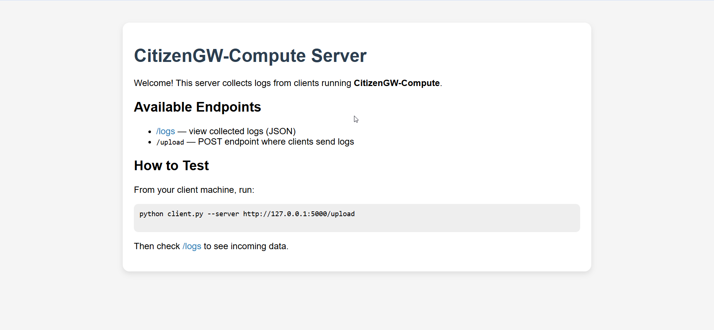
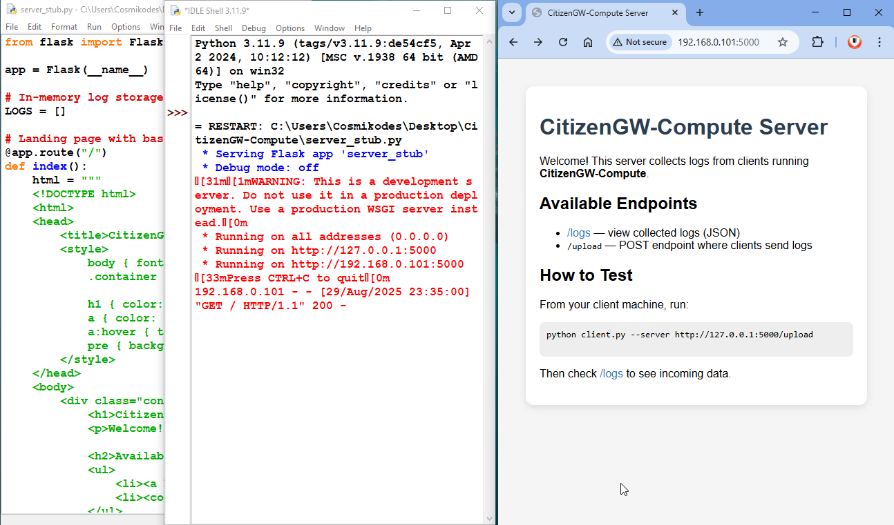
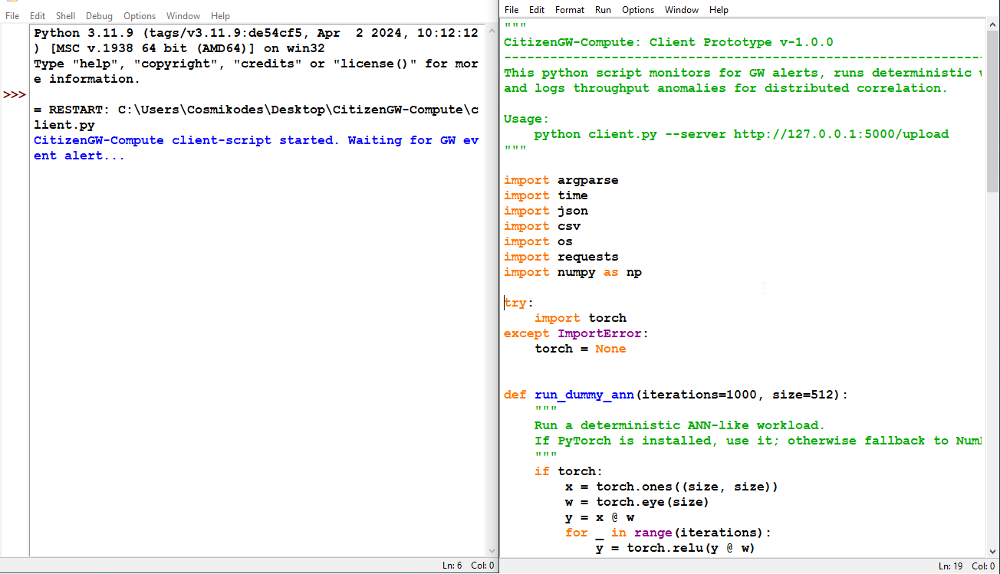

CosmiKodes
Embedded AI • Edge ML • LLM Systems • Software Consulting
Embedded AI • Edge ML • LLM Systems • Software Consulting
I provide software development and IT consulting services specializing in embedded AI, edge machine learning, and transformer-based systems. My focus is on efficient, production-ready implementations across microcontrollers, edge devices, and cloud environments.

CitizenGW-Compute is an open science initiative that reimagines your computer’s raw processing power as a virtual gravitational wave antenna. Instead of trying to detect tiny clock shifts directly, we treat the total number of operations per second with deterministic dummy ANNs as amplification channel. By scaling tiny spacetime ripples into measurable deviations in throughput, everyday CPUs, GPUs, and even supercomputers can join in the hunt for gravitational waves.
Features:
Deterministic Dummy ANN-like benchmark using NumPy orPyTorch. Event-triggered "logging mode" on GW alerts. Local CSV/JSON logging of performance metrics. Optional upload to a central Flask-based server. Designed for Windows or Linux or MacOS (Python 3.8+).
Roadmap:
Real-time integration with LIGO/Virgo alert API. Advanced ML-based anomaly correlation. Visualization dashboards for citizen contributors. Multi-user distributed logging network.
Usage:
Run the client, listening for GW alerts and switching to logging mode := python client.py --server http://127.0.0.1:5000/upload --alert-endpoint https://gwosc.org/api/ Below is example on how to fetch data from our API in python languages. If a GW alert is detected, you’ll be prompted: GW ALERT received! Switch system to logging mode? (y/n): Server Start the minimal Flask server to collect logs: python server_stub.py View logs in browser: http://127.0.0.1:5000/logs
 

Implemented model optimization workflows including quantization, pruning, and ONNX-based deployment for edge devices.
Focus: Power efficiency, memory reduction
I provide structured technical documentation to support design decisions, feasibility studies, and deployment strategies. These documents are written to engineering and stakeholder standards.
Analysis of deploying ML inference on microcontrollers, including memory budgeting, latency benchmarks, and optimization trade-offs.
Format: PDF · 10–15 pages
Practical documentation covering quantization, pruning, and deployment pipelines for edge AI workloads.
Format: PDF · Technical Notes
Architectural overview of transformer-based systems, including model selection, fine-tuning strategy, and inference deployment.
Format: PDF · Architecture Brief
I actively share engineering knowledge, experiments, and implementation walkthroughs through open platforms. This reinforces transparency, reproducibility, and long-term collaboration.
Hands-on videos covering embedded AI, edge ML pipelines, transformer systems, and performance optimization.
Future update: video embeds, playlists, and tutorials.
Reference implementations, experiments, and reproducible codebases for embedded systems and ML deployments.
I focus on clear documentation, open discussions, and educational content to support engineers and product teams.
Community initiatives will evolve organically.
I collaborate with global clients on clearly defined technical scopes, feasibility studies, and implementation work. Engagements are structured to ensure transparency, documentation, and predictable delivery.
For most projects, I work through established professional platforms to ensure secure payments, milestone-based execution, and clear communication.
Recommended: Fiverr (Project-based & Consulting)
Suitable for architecture reviews, feasibility validation, performance analysis, and technical direction.
Deliverables: Written notes, diagrams, or reports
If you would like to discuss a project, please initiate contact through the platform where you found this portfolio.
Direct contact details are shared after scope alignment.